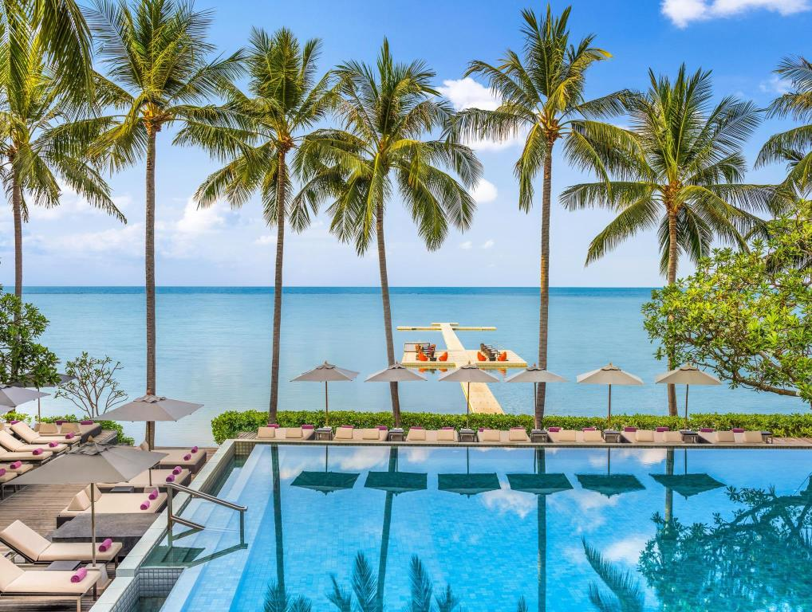

Apart from its white sand beaches, Boracay is also famous for being one of the world's top destinations for relaxation. As of 2013 it was emerging among the top destinations for tranquility and nightlife. Boracay was awarded as the 2012 best island in the world from the international travel magazine Travel + Leisure.